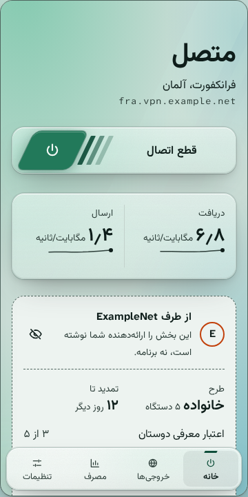
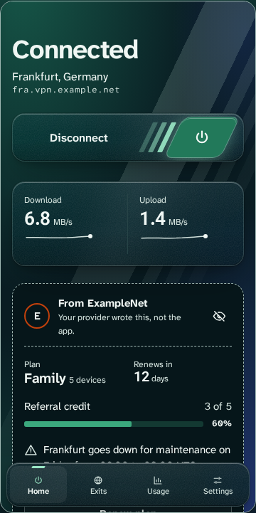

VPN برای شبکههایی که VPN را میبندند
Veilway نرمافزاری متنباز برای راهاندازی سرور VPN شخصی روی شبکهای سانسورشده یا ناامن است، برای خودتان یا یک گروه کوچک. نخستین نسخه، v0.1.0-alpha، سرور و پنل وب آن را با یک اسکریپت یا Docker نصب میکند و از لینوکس، macOS، ویندوز و اندروید به آن وصل میشود.
آلفاهنوز هیچ بازبینی امنیتی بیرونی نداشته است. برنامههای macOS و ویندوز ساخته شدهاند اما هنوز روی دستگاه واقعی آزموده نشدهاند. منتظر باگ باشید و آنها را به ما گزارش کنید.
کار به کجا رسیده
جایی که از کار افتادن Veilway شما را به خطر میاندازد، به آن تکیه نکنید. هیچ بخشی از آن در برابر بازرسی عمیق بستهها (DPI) یا کاوش فعال آزموده نشده، و مشخصات پروتکلش پیشنویسی است که فقط خود پروژه بازبینیاش کرده است.
برنامه، مرحله به مرحله
- ۰مخزن، مجوز، مدل تهدیدانجام شد
- ۱موتور هستهانجام شد
- ۲پروتکل جدید و موتور کلاینتانجام شد
- ۳سیستم طراحیانجام شد
- ۴پنل وبانجام شد
- ۵برنامهٔ دسکتاپ، آلفای عمومیانجام شد
- ۶افزونهٔ اختیاری Xrayقدم بعدی
- ۷برنامهٔ اندرویدانجام شد
- ۸مستندات کامل، نمونههای SDK، استوارسازیبرنامهریزیشده
آنچه امروز کار میکند
- سروری که WireGuard را برای کاربران زیادی روی UDP مبهمسازیشده، TLS، WebSocket یا یک مسیر HTTP پشت دامنهٔ دیگر اجرا میکند، با قانونهای مسیریابی، سهمیهٔ مصرف و بارگذاری دوبارهٔ پیکربندی بدون راهاندازی دوباره. کسی که بدون حساب کاربری سرور را کاوش کند، وبسایت خود گرداننده را میبیند.
- یک پنل وب به فارسی و انگلیسی: ورود مدیر با تأیید دومرحلهای، کاربران و دستگاهها، لینکهای اشتراک و کد QR، ورودیها، خروجیها و مسیریابی سرور، اتصال دو سرور به هم، تاریخچهٔ ترافیک، و یک API مدیریتی با توکن.
- برنامههای دسکتاپ برای لینوکس، macOS و ویندوز، به فارسی و انگلیسی. اشتراک را با لینک یا کد QR وارد میکنند، پیش از هر کار پرخطر به زبان ساده میپرسند، با یک دکمه وصل میشوند، و سرعت لحظهای، مصرف و خروجی را نشان میدهند. اگر تونل از کار بیفتد، کلید قطع اضطراری ترافیک را میبندد.
- یک برنامهٔ اندروید روی همان موتور، با همان صفحهها به هر دو زبان.
- اتصال دو سرور به هم، با کدهایی که هر دو گرداننده با هم مقایسه میکنند.
نصب سرور
یک اسکریپت نود، پنل یا هر دو را روی یک سرور لینوکس نصب میکند و پیش از نصب هر چیزی، امضای هر فایل دانلودی را با minisign بررسی میکند. آن را با دسترسی root اجرا کنید:
curl -fsSL https://raw.githubusercontent.com/veilway-project/veilway/main/scripts/veilway.sh | sudo bash
راه دیگر، ایمیجهای Docker همراه با یک فایل compose است: ghcr.io/veilway-project/veilway و ghcr.io/veilway-project/veilway-panel. راهنمای شروع هر دو راه را قدم به قدم توضیح میدهد.
دانلود
برنامههای لینوکس، macOS، ویندوز و اندروید، و خود نود، در صفحهٔ نسخههای Veilway هستند. پنل نسخههای جداگانهٔ خودش را دارد. اسکریپت نصب هر دو را برایتان دانلود میکند.
قدم بعدی
افزونهٔ اختیاری Xray: بهطور پیشفرض خاموش است و نسخهٔ رسمی Xray را کنار Veilway اجرا میکند تا سرور و برنامهها بتوانند VLESS، VMess، Trojan و Shadowsocks را هم پشتیبانی کنند. پس از آن، شکلهای بیشتر HTTP برای مسیر پشت دامنهٔ دیگر، اتصالهای ترکیبی برای شبکههایی که هر اتصال را جداگانه کند میکنند، HTTP/2 روی ترنسپورتهای TLS و WebSocket، و حالتی که در آن سرور دستدادن یک سایت واقعی را نشان میدهد.
چه چیزی را متفاوت انجام میدهد
خود تونل استاندارد میماند. تلاش اصلی برای رساندن آن از شبکه است، و برای یک مجموعه ابزار یکپارچه از سرور تا گوشی.


-
رمزنگاری خود WireGuard
تونل همان WireGuard دستنخورده است و با boringtun کار میکند. Veilway دور تونل کار میکند و رمزنگاری تازهای از خودش نمیسازد.
-
ترنسپورت برای جایی که UDP بسته است
تونل میتواند از راه UDP مبهمسازیشده، TLS، WebSocket یا یک مسیر HTTP پشت دامنهٔ دیگر برود. کسی که بدون حساب کاربری سرور را بررسی کند، همان پاسخ معمولی وبسایت خود گرداننده را میگیرد.
-
یک موتور برای سرور و برنامهها
سرور و برنامهها روی یک هستهٔ Rust ساخته میشوند. این هسته یک کتابخانه هم هست، برای هر کسی که یک موتور WireGuard در برنامهٔ خودش میخواهد.
-
ورود از یک سرور، خروج از سروری دیگر
دو سرور را میشود به هم وصل کرد تا کاربران به یکی وصل شوند و ترافیکشان از دیگری بیرون برود. گردانندگان آنها را در پنل یا از خط فرمان با دو کد جفت میکنند و یک اثر انگشت را با هم مقایسه میکنند.
-
فارسی و انگلیسی از روز اول
سیستم طراحی و مستندات به هر دو زبان نوشته شدهاند، با چیدمان راستبهچپ، رقمهای فارسی و تاریخ شمسی، و هر برنامهای که روی آنها ساخته شود هم همینطور است.
بخوانید، اجرا کنید، گزارش دهید
همهچیز آشکارا و در سازمان veilway-project در GitHub انجام میشود.
-
کد
هسته، API کنترل، برنامهها و اسکریپت نصب. برنامهها و نود در صفحهٔ نسخههای آن هستند.
github.com/veilway-project/veilway -
پنل
پنل وب برای گرداندن سرور: کاربران، دستگاهها، لینکهای اشتراک و API مدیریتی.
github.com/veilway-project/veilway-panel -
مستندات
مشخصات پروتکل، مرجع پیکربندی و راهنماها، به فارسی و انگلیسی. بسیاری از صفحهها هنوز فقط طرح کلی دارند.
veilway-project.github.io/veilway-docs -
سیاست امنیتی
آسیبپذیری را بهصورت خصوصی و از راه فرم GitHub گزارش دهید، هرگز در یک issue عمومی.
SECURITY.md -
مشارکت
پیش از نخستین pull request این را بخوانید. در همان بار اول از شما خواسته میشود CLA را امضا کنید.
CONTRIBUTING.fa.md -
همهٔ مخزنها
هسته، پنل، مستندات و سیستم طراحی، هر کدام در مخزن خودش.
github.com/veilway-project